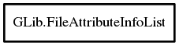

FileAttributeInfoList
Object Hierarchy:

Description:
[ Compact ]
public class FileAttributeInfoList
Acts as a lightweight registry for possible valid file attributes.
The registry stores Key-Value pair formats as FileAttributeInfos.
Content:
Creation methods:
Methods:
- public void add (string name, FileAttributeType type, FileAttributeInfoFlags flags)
Adds a new attribute with name to the
this, setting its type and flags.
- public FileAttributeInfoList dup ()
Makes a duplicate of a file attribute info list.
- public unowned FileAttributeInfo? lookup (string name)
Gets the file attribute with the name name from
this.
- public FileAttributeInfoList @ref ()
References a file attribute info list.
- public void unref ()
Removes a reference from the given this
.
Fields: